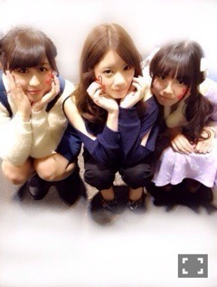

| 2014/01 12 Sun | 斎藤ちはる 中3組！！！(´>∀<｀ )ゝ |
ちはるーむへようこそ٩꒰⍢ ꒱۶
へたっぴういんく(∩´﹏`∩)♡
今日は月刊エンタメの取材を受けてきたよ〜(* ˆωˆ *)
なんと、いくちゃん、ひめたんの3人の中3組で！！！♡
ずっと一緒に3人でお仕事したかったから
やっと念願叶いました。。
P/S
ちなみに中3組とは、
いくちゃん、ひめたん、ちはるの
一期生同い年トリオです
なんで中3組なのかとよく聞かれるのですが
出会ったとき、乃木坂に入ったときが
中3なので中3のイメージが強く、
いまでも、この先もずっと、
おばあさんになっても
中3組なのであろう。と思います
これからも3人でお仕事したいし
いつかは3人でユニットとかやりたいね
って話してるの(* ˆωˆ *)
密かな願い。
いくちゃんんん
ひめたんんん
すき〜♡
また発売日近くなったら報告するね♪
それで取材終わった後には
ひめたんとお茶してきた\( ˆoˆ )/
いっぱい語ってきた♡
楽しかったわいわい\( ˆoˆ )/
今度はいくちゃんも、
また3人で遊ぼうって計画してるんだけど
去年の春休みからプライベートで遊んで無くて(´･_･`)
また今年の春休みになりそうな予感(´･_･`)
1年に一回のイベントになりそう(´･_･`)さみしい
これから中3組に注目しててほしいですヾ(*･∀･*)ﾉﾞ
(Ӧ)(ӧ)(Ӧ)(Ӧ)(ӧ)〜♬(Ӧ)(ӧ)(Ӧ)(Ӧ)(ӧ)〜♬
最近映画のタイタニックをみたら
沈没船にビビビときてしまって
また、再び、考古学にハマってしまいそう(´･_･`)♡どうしよう(´･_･`)♡
初期のお見立て会以来、久しぶりに
考古学が好きと言った\( ˆoˆ )/いま
そうなんですよ！
こうみえて意外かもしれないんですが
考古学がすきなんですよ！
エジプトとか〜
ピラミッドとか〜
マチュピチュとか〜
なんだか神秘を感じるのよね♡
アイドルとしては変わり者かもしれませんが！！
今の世の中、プロレスファン、サッカーファン、野球ファン、鉄道ファン、
その他諸々の色んなアイドルさん達がいる中、
考古学ファンのアイドルがいてもいいのではないか！！
と考え出しましたので、
これから考古学好きをちょくちょく推していこうかと思っております。。
どうぞよろしゅう。

よろしゅう。
ちょこん。ちーちゃんせいたんひめたん
(Ӧ)(ӧ)(Ӧ)(Ӧ)(ӧ)〜♬(Ӧ)(ӧ)(Ӧ)(Ӧ)(ӧ)〜♬
書道褒めてくれてありがとう♡
こんな初心者ですが、
頑張って発信していくね！！！
そしてそしてリクエストもいっぱい！
ありがとう♡
できるだけたくさん書いていきたいと思ってるから
ちょっと待っててね(p`･ω･´q)！
よし！
明日のお仕事もがんばるぞ！
おやすみなさい
まあやんちにて、
真夏の全国ツアーTシャツを
お借りして写真撮りました(p`･ω･´q)
まあやだいすきよー♡
ばいるんっ
るんるんっ
ちはるんっ
(´>∀<｀)ゝ